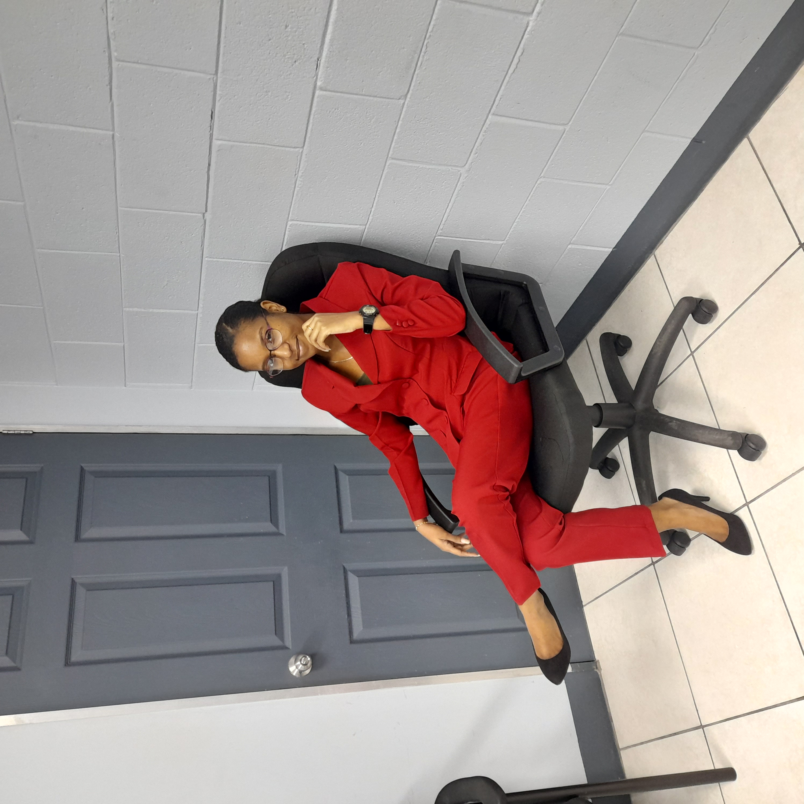

So you're probably wondering who's the face behind this blog. Well here you go! Hi! I'm Destiny, and I am the face behind this blog. I am a bibliophile from the beautiful islands of Trinidad & Tobago. My love for books was rekindled during the start of pandemic in 2020. Growing up, the very first book that I read was Donkey On the Sands by Enid Blyton and from then I began reading other novels by Enid Blyton such as the "The Twins at St. Clare's" series. Later on I began reading The Diary of Wimpy Kid, Dork Diaries and of course Goddess Girls. But later on in my schooling years, my Standard 4 (Grade 4 for those in the US) teacher gave us a list of authors who's books we should be reading and it was in that moment I fell in love with carolyn Keene's series, Nancy Drew. I read books in under 24 hours but as I advanced in my schooling, my reading began decreasing to one book at least every 1-2 months. Now I am so happy that I rekindled my love for reading and have found new authors whom I really enjoy. Since rekindling my love for reading, I have become obsessed with authors like Colleen Hoover, Angie Thomas, Nic Stone, Brigid Kemmerer, Holly Jackson, and Karen McManus. I have also began exploring new genres such as Romance, Young Adult, Fantasy, and much more. Presently, my favourite bookss are Confess, A Heart So Fierce and Broken, All Your Perfects, A Good Girl's Guide To Murder, The Hate U Give, Dear Martin, One of Us is Lying, A Thousand Boy Kisses (lives in my head rent free every single day!!), and others that just can't come to mind right now. The reason I read is because it transports me to another dimension allowing me to escape from my problems, and also I am an only child so I found comfort in reading books. The characters felt surreal that I forgot at times they weren't real. (I didn't talk back to them no worries! I wasn't that crazy lol)
Outside of being a bibliophile, I am actual a slight nerd. I didn't have perfect grades all the time (yes not all readers have a high IQ), but I did well enough to get me thus far. I completed my education straight up to my bachelors. I possess a BSc in Applied Computer Science and have been interning and gaining experience in the field. I love being a woman in STEM! (If you are also a woman in STEM, feel free to say hi! I love meeting other female bibliophiles who are also in STEM). And in case anybody was wondering, yes I built this website myself from scratch. It was fun designing an developing this blog but I honestly have a love hate relationship with programming. One minute it's fun and next minute it's frustrating and I wants nothing to do with it (Other coders can relate to this). Besides programming I also enjoy the networking, cybersecurity, and ethical hacking (don't worry I won't hack you! This is a safe zone and don't you dare try to hack me). I have plans of doing a masters in engineering though as I actually want to be a Robotics Engineer. Geez, I'm writing all of this and feeling old. I'm actually not. I'm only 19. I'm kind of like a Leonard Horsford (I'm referring to Big Bang Theory for those of you all who don't watch this show. If you don't, you really should watch it though. It's actually really good. It's a comfort show). Anyways, I'm actually a mixture of all the BBT characters. I seek academic validation just like they do so I went to school for 17.5 years straight as well as did outside courses plus extra curricular activities. I am not your typical IT professional. Most IT folks are introverts but I am actually an ambivert so I can be introverted at times and also extroverted at times. I also do a lot of social activities which majority of IT professionals don't do. I played sports, did ballroom and latin dance for 3 years, studied music by which I did piano classes since I was age 7 or 8 followed by the music theory up to grade 4, and guitar up to grade 2. I also participated in an Australian Mathematics Competition which I obtained a Certificate of Credit, and I did so much more. I am obsessed with getting certificates and bettering myself in all aspects of my life which I mean is not a bad thing.
Now I'm tired of writing paragraphs so the rest of information about me will be in listed below: